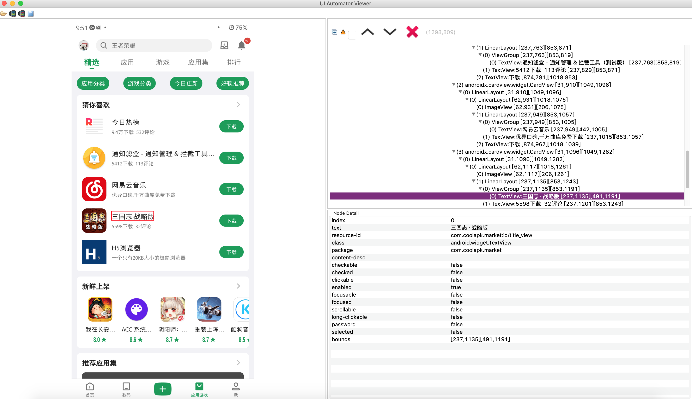

情景模式（Profile）
0.1. 前言
规则引擎：https://github.com/j-easy/easy-rules
You can build a simple rules engine yourself. All you need is to create a bunch of objects with conditions and actions, store them in a collection, and run through them to evaluate the conditions and execute the actions.
0.2. 介绍
情景模式简单理解：
什么时候，干什么。
什么时候就是触发条件（condition）
干什么就是动作（actions）
0.3. 新建
新建一条入门实例如下，以JSON格式为例：
[
{
"name": "Current pkg",
"description": "应用切换时，使用Toast显示当前应用的当前应用包名",
"priority": 2,
"condition": "frontPkgChanged == true",
"actions": [
"ui.showShortToast(activity.getFrontAppPackage());"
]
}
]
参数解释：
| 参数名 | 含义 |
|---|---|
| name | 请使用英文，情景模式名字，多个模式不能重复，否则会被覆盖 |
| description | 任意的描述 |
| priority | 优先级，决定执行顺序 |
| condition | 触发条件，支持mvel表达式，条件可选的基于事实的facts-param请参考下面的章节 语法注意：双引号需要使用\转移字符转义 |
| actions | 要执行的动作，支持mvel表达式，可以设置多个，动作可选的handle请参考下面的章节 语法注意：双引号需要使用\转移字符转义 |
0.4. Fatcs-params
除了提供规则引擎之外，Thanox也会提供常用的事实与参数，用于condition条件判断。
0.4.1. 应用安装
应用安装成功之后，thanox会发布这个事实，并注入一些参数，你可以使用这些参数做条件判断，或者执行动作时作为参数使用。
| 参数名 | 类型 | 含义 | 示例 |
|---|---|---|---|
| pkgAdded | Boolean（true/false） | 新应用已经安装 | 如下 |
| pkgName | String（字符串） | 安装的应用包名 | 如下 |
pkgAdded 示例
- 作为条件判断：
json
"condition": "pkgAdded == true"
pkgName示例
- 作为条件判断：
json
"condition": "pkgAdded == true && pkgName == \"com.tencent.mm\""
- 作为动作参数：
json
"ui.showShortToast(pkgName);"
0.4.2. 应用切换
前台应用切换时，thanox也会发布这个事实，参数如下。
| 参数名 | 类型 | 含义 | 示例 |
|---|---|---|---|
| frontPkgChanged | Boolean（true/false） | 前台应用已切换 | 如下 |
| from | String（字符串） | 从哪个应用切换的，包名 | 如下 |
| to | String（字符串） | 切换到哪个应用，包名 | 略 |
frontPkgChanged示例
- 作为条件判断：
json
"condition": "frontPkgChanged == true"
from示例
- 作为条件判断，微信是否回到了后台：
json
"condition": "frontPkgChanged == true && from == \"com.tencent.mm\""
0.4.3. 任务清理
当某个应用的任务被移除时，一般场景为最近任务中，该任务被用户划掉。此时thanox也会发布这个事实，参数如下。
| 参数名 | 类型 | 含义 | 示例 |
|---|---|---|---|
| taskRemoved | Boolean（true/false） | 任务已移除 | 如下 |
| pkgName | String（字符串） | 从哪个应用切换的，包名 | 如下 |
taskRemoved示例
- 作为条件判断：
json
"condition": "taskRemoved == true"
pkgName示例：
- 作为条件判断，微信任务移除时杀死应用：
json
"condition": "taskRemoved == true && pkgName == \"com.tencent.mm\""，
"actions": [
"ui.showShortToast(\"正在杀死微信\");",
"killer.killPackage(pkgName);"
]
0.4.4. Activity Created
通常一个应用的活动页已经创建好，可以称为Activity Created。此时thanox也会发布这个事实，参数如下。 通常一个活动的生命周期为Created（创建好）-->Resumed（显示好，可以交互了）--> Paused（暂停）--> Destroyed（销毁了），需要注意的是， 如果一个活动走到Resumed状态时，被其他活动覆盖，例如被支付宝支付页面覆盖，那么它会走如下生命周期： Resumed--> Paused（被其他活动覆盖）-->Resumed（如果其他活动销毁了，回到了该活动，那么又会恢复到Resumed，而不会再次Create）。 详细的Android活动的生命周期可以参考：https://developer.android.com/guide/components/activities/activity-lifecycle
| 参数名 | 类型 | 含义 | 示例 |
|---|---|---|---|
| activityCreated | Boolean（true/false） | 活动页已经创建好 | 如下 |
| componentNameAsString | String（字符串） | 活动的组件全名，Thanox的显示当前活动复制来的名字就是这个 | 如下 |
| componentNameAsShortString | String（字符串） | 活动的组件缩名 | 如下 |
| componentName | ComponentName | 活动的组件 | 如下 |
| pkgName | String（字符串） | 应用的包名 | 如下 |
0.4.5. Activity Resumed
通常一个应用的活动页已经显示，可以称为Activity Resumed。此时thanox也会发布这个事实，参数如下。
| 参数名 | 类型 | 含义 | 示例 |
|---|---|---|---|
| activityResumed | Boolean（true/false） | 活动已经显示 | 如下 |
| componentNameAsString | String（字符串） | 活动的组件全名，Thanox的显示当前活动复制来的名字就是这个 | 如下 |
| componentNameAsShortString | String（字符串） | 活动的组件缩名 | 如下 |
| componentName | ComponentName | 活动的组件 | 如下 |
| pkgName | String（字符串） | 应用的包名 | 如下 |
通常很多应用启动首页会有一个首页显示广告，有个跳过按钮可以点击，下面是使用该事实实现的广告跳过示例：
[
{
"name": "AD Skip",
"description": "彩云天气广告页面点击跳过",
"priority": 1,
"condition": "activityResumed == true && componentNameAsShortString == \"com.nowcasting.activity/.SplashActivity\"",
"actions": [
"ui.showShortToast(\"尝试点击跳过...\");",
"ui.findAndClickViewByText(\"跳过\", \"com.nowcasting.activity/com.nowcasting.activity.SplashActivity\");"
]
}
]
提示：
此处条件只判断了彩云天气，可以使用||操作符做多条件判断。
此处的ui操作后续会介绍。
0.4.6. Activity Changed
当前前台活动(Activity)发生改变时thanox会发布该事件。(Since Thanox(or Pro)-2.5)
| 参数名 | 类型 | 含义 | 示例 |
|---|---|---|---|
| frontActivityChanged | Boolean（true/false） | 前台Activity改变 | 无 |
| fromActivity | ComponentName | 活动的组件 | 无 |
| toActivity | ComponentName | 活动的组件 | 无 |
ComponentName 是活动组件名称。
例如：com.android.messaging/com.android.messaging.ui.conversationlist.ConversationListActivity
Thanox的开发者设置中，"显示当前Activity"功能也可以显示当前activity的ComponentName。
0.4.7. 应用停止运行
应用被杀死或者其他原因停止运行，Thanox会发布该事实。
| 参数名 | 类型 | 含义 | 示例 |
|---|---|---|---|
| pkgKilled | Boolean（true/false） | 任务已移除 | 如下 |
| pkgName | String（字符串） | 应用包名 | 如下 |
0.4.8. 屏幕开关
| 参数名 | 类型 | 含义 | 示例 |
|---|---|---|---|
| screenOn | Boolean（true/false） | 亮屏事件 | 无 |
| screenOff | Boolean（true/false） | 灭屏事件 | 无 |
| userPresent | Boolean（true/false） | 解锁事件 | 无 |
0.4.9. 电量变化
| 参数名 | 类型 | 含义 | 示例 |
|---|---|---|---|
| batteryChanged | Boolean（true/false） | 电量发生变化 | 无 |
| batteryLevel | int | 电量 | 无 |
| isCharging | Boolean（true/false） | 是否在充电 | 无 |
| isAcCharge | Boolean（true/false） | 是否为AC | 无 |
| isUsbCharge | Boolean（true/false） | 是否为USB | 无 |
0.4.10. 蓝牙事件
| 参数名 | 类型 | 含义 | 示例 |
|---|---|---|---|
| btStateChanged | Boolean（true/false） | 蓝牙开关状态发生变化 | 无 |
| btStateOff | Boolean（true/false） | 蓝牙为关闭状态 | 无 |
| btStateTurningOff | Boolean（true/false） | 蓝牙为正在关闭状态 | 无 |
| btStateOn | Boolean（true/false） | 蓝牙为开启状态 | 无 |
| btStateTurningOn | Boolean（true/false） | 蓝牙为正在开启状态 | 无 |
| btConnectionStateChanged | Boolean（true/false） | 蓝牙连接状态发生变化 | 无 |
| btConnectionStateConnected | Boolean（true/false） | 蓝牙为已连接状态 | 无 |
| btConnectionStateConnecting | Boolean（true/false） | 蓝牙为正在连接状态 | 无 |
| btConnectionStateDisconnected | Boolean（true/false） | 蓝牙为断开连接状态 | 无 |
| btConnectionStateDisconnecting | Boolean（true/false） | 蓝牙为正在断开连接状态 | 无 |
| btBoundedDevices | List of BluetoothDevice | 绑定的蓝牙设备模型列表 | 无 |
| btBoundedDeviceAddresses | List of String | 绑定的蓝牙设备地址列表 | 无 |
| btBoundedDeviceAliasNames | List of String | 绑定的蓝牙设备Alias列表 | 无 |
| btBoundedDeviceBatteryLevel | List of Int | 绑定的蓝牙设备电量信息列表 | 无 |
补充：
Battery level in percents from 0 to 100, or -1 if * Bluetooth is disabled, or device is disconnected, or does not have any battery reporting * service, or return value is invalid
示例1：
[
{
"name": "BT Connection State",
"description": "蓝牙连接状态监听，此处监听连接事件，Toast显示所有连接设备，并判断是不是连接的MDR-XB650BT",
"priority": 2,
"condition": "btConnectionStateChanged == true && btConnectionStateConnected == true",
"actions": [
"ui.showShortToast(\"蓝牙连接连接到新设备了，所有设备名称为：\" + btBoundedDeviceAliasNames);",
"ui.showShortToast(\"蓝牙连接连接到新设备了，包含MDR-XB650BT设备吗？\" + btBoundedDeviceAliasNames.contains(\"MDR-XB650BT\"));"
]
}
]
示例2：
[
{
"name": "BT Connection State Advanced",
"description": "同蓝牙连接状态监听，只是使用了btBoundedDevices:BluetoothDevice参数",
"priority": 2,
"condition": "btConnectionStateChanged == true && btConnectionStateConnected == true",
"actions": [
"ui.showShortToast(\"蓝牙连接连接到新设备了，第一个设备名称为：\" + btBoundedDevices.get(0).getAddress());"
]
}
]
0.4.11. Wifi状态变化
Wifi状态变化时发出的事件。（Since Thanox 2.5-2）
| 参数名 | 类型 | 含义 | 示例 |
|---|---|---|---|
| wifiStateChanged | Boolean（true/false） | Wifi状态是否改变 | 无 |
| wifiState | WifiState | 状态 | 无 |
WifiState:
data class WifiState(
// 是否是开启状态
val enabled: Boolean,
// 状态信息（例如：No network）
val statusLabel: String?,
// SSID（例如：ChinaNet-d2Xq-5G）
val ssid: String?
)
0.4.12. 系统启动
| 参数名 | 类型 | 含义 | 示例 |
|---|---|---|---|
| systemReady | Boolean（true/false） | 系统启动完成 | 无 |
0.4.13. 推送消息
| 参数名 | 类型 | 含义 | 示例 |
|---|---|---|---|
| fcmPushMessageArrived | Boolean（true/false） | 收到GCM/FCM消息推送 | 无 |
| pkgName | String（字符串） | 应用包名 | 无 |
0.4.14. 通知
| 参数名 | 类型 | 含义 | 示例 |
|---|---|---|---|
| notificationAdded | Boolean（true/false） | 新通知到达 | 无 |
| notificationRemoved | Boolean（true/false） | 通知移除 | 无 |
| pkgName | String（字符串） | 通知所属应用包名 | 无 |
| notificationTitle | String（字符串） | 通知标题 | 无 |
| notificationContent | String（字符串） | 通知内容 | 无 |
0.5. Handle
Thanox会提供一部分执行动作所需要的handle能力。例如ui，专门用于做界面显示相关的动作。
你可以使用handle.action(params)来执行自定义的动作。
下面是目前支持的Handle能力。
0.5.1. killer
| 能力 | 含义 | 参数 | 举例 | 返回值 |
|---|---|---|---|---|
| killPackage | 杀死应用 | 包名 | killer.killPackage("com.tencent.mm") | Boolean（true/false） |
接口定义：
@HandlerName("killer")
interface IKiller {
boolean killPackage(String pkgName);
}
举例：
"actions": [
// 杀死微信
"killer.killPackage(\"com.tencent.mm\")"
]
0.5.2. activity
| 能力 | 含义 | 参数 | 举例 | 返回值 |
|---|---|---|---|---|
| launchProcessForPackage | 启动应用进程 | 包名 | 如下 | Boolean（true/false） |
| launchMainActivityForPackage | 打开应用主界面 | 包名 | 如下 | Boolean（true/false） |
| getLaunchIntentForPackage | 获取用用的启动Intent | 包名 | 如下 | Intent |
| getFrontAppPackage | 获取当前前台应用包名 | 无 | 如下 | String（字符串） |
| getFrontAppPackageComponent | 获取当前前台应用组件 | 无 | 如下 | ComponentName |
接口定义：
@HandlerName("activity")
interface IActivity {
boolean launchProcessForPackage(String pkgName);
boolean launchActivity(Intent intent);
boolean launchMainActivityForPackage(String pkgName);
Intent getLaunchIntentForPackage(String pkgName);
String getFrontAppPackage();
ComponentName getFrontAppPackageComponent();
}
举例：
"actions": [
// 启动微信进程
"activity.launchProcessForPackage(\"com.tencent.mm\")",
// 打开微信主界面
"activity.launchMainActivityForPackage(\"com.tencent.mm\")",
// 吐司显示目前前台应用包名
"toast.showShortToast(activity.getFrontAppPackage())"
]
0.5.3. power
电源相关能力
| 能力 | 含义 | 参数 | 举例 | 返回值 |
|---|---|---|---|---|
| sleep | 休眠（锁屏） | 延迟的毫秒数 | 如下 | 无 |
| wakeup | 唤醒 | 延迟的毫秒数 | 如下 | 无 |
| setBrightness | 设置屏幕亮度 | 亮度Level值(0~255) | 如下 | 无 |
| getBrightness | 获取当前屏幕亮度 | 无 | 如下 | 度Level值(0~255) |
| setAutoBrightnessEnabled | 设置自动亮度开关 | true/false | 如下 | 无 |
| isAutoBrightnessEnabled | 是否开启自动亮度 | 无 | 如下 | true/false |
接口定义：
@HandlerName("power")
interface IPower {
void sleep(long delay);
void wakeup(long delay);
void setBrightness(int level);
int getBrightness();
void setAutoBrightnessEnabled(boolean enable);
boolean isAutoBrightnessEnabled();
}
举例：
{
"actions": [
// 立即锁屏
"power.sleep(0)",
// 1秒后亮屏
"power.wakeup(1000)",
"power.setAutoBrightnessEnabled(false)",
"power.setBrightness(power.getBrightness() + 1)",
]
}
0.5.4. task
任务相关能力
| 能力 | 含义 | 参数 | 举例 | 返回值 |
|---|---|---|---|---|
| removeTasksForPackage | 移除应用的最近任务 | 包名 | 如下 | 无 |
| hasTaskFromPackage | 应用是否有最近任务 | 包名 | 如下 | Boolean（true/false） |
| clearBackgroundTasks | 调用thanox的任务清理功能，清理所有最近任务 | 无 | 如下 | 无 |
接口定义：
@HandlerName("task")
interface ITask {
void removeTasksForPackage(String pkgName);
boolean hasTaskFromPackage(String pkgName);
void clearBackgroundTasks();
}
举例：
{
// 判断微信是否有任务
"condition": "true && task.hasTaskFromPackage(\"com.tencent.mm\")",
"actions": [
// 移除微信的最近任务
"task.removeTasksForPackage(\"com.tencent.mm\")"
]
}
0.5.5. ui
界面相关
| 能力 | 含义 | 参数 | 举例 | 返回值 |
|---|---|---|---|---|
| showShortToast | 显示提示 | 无 | 如下 | 无 |
| showLongToast | 显示时间较短的提示 | 无 | 如下 | 无 |
| showDialog | 显示对话框 | 标题文本，信息文本，确认按钮文本 | 如下 | 无 |
| showNotification | 显示通知 | 标签（可用于取消通知）标题文本，信息文本，是否重要 | 如下 | 无 |
| cancelNotification | 取消通知 | 标签 | 如下 | |
| findAndClickViewByText | 点击某文字的视图 | 要点击视图的文本（默认在当前显示的页活动页查询） | 如下 | 无 |
| findAndClickViewByText | 点击某文字的视图 | 要点击视图的文本，所在活动组件 | 如下 | 无 |
| findAndClickViewById | 点击某ID的视图 | 要点击视图的文本（默认在当前显示的页活动页查询） | 如下 | 无 |
| findAndClickViewById | 点击某ID的视图 | 要点击视图的文本，所在活动组件 | 如下 | 无 |
接口定义：
@HandlerName("ui")
interface IUI {
void showShortToast(@NonNull String msg);
void showLongToast(@NonNull String msg);
void showDialog(@Nullable String title,
@NonNull String msg,
@Nullable String yes);
void showNotification(
@NonNull String notificationTag,
@NonNull String title,
@NonNull String msg,
boolean important);
void cancelNotification(@NonNull String notificationTag);
void findAndClickViewByText(@NonNull String text);
void findAndClickViewByText(@NonNull String text, @Nullable String componentNameShortString);
}
举例：
[
{
"name": "AD Skip",
"description": "彩云天气广告页面点击跳过",
"priority": 1,
"condition": "activityResumed == true && componentNameAsShortString == \"com.nowcasting.activity/.SplashActivity\"",
"actions": [
"ui.showShortToast(\"尝试点击跳过...\");",
"ui.findAndClickViewByText(\"跳过\", \"com.nowcasting.activity/com.nowcasting.activity.SplashActivity\");"
]
}
]
提示：
如何获取一个View的ID？
不是所有的View都会被分配一个ID，你可以借助一些开发工具来获取，不知道是否有这样的App可以直接获取，
Thanox默认带了一个ViewId助手，你需要打开系统设置--开发者选项--显示布局边界，界面上会出现所有View的ID。
注意，上述Handle支持的ViewId的格式为：包名:id/真正的id，例如：com.coolapk.market:id/title_view
在推荐一个Android开发工具：uiautomatorviewer，需要下载Android SDK。具体配置可以Google。
使用如图：

0.5.6. hw
硬件操作能力
| 能力 | 含义 | 参数 | 举例 | 返回值 |
|---|---|---|---|---|
| enableWifi | 看名字 | 包名 | 如下 | Boolean（true/false） |
| disableWifi | 看名字 | 无 | 如下 | Boolean（true/false） |
| isWifiEnabled | 看名字 | 无 | 如下 | Boolean（true/false） |
| enableLocation | 看名字 | 无 | 如下 | Boolean（true/false） |
| disableLocation | 看名字 | 无 | 如下 | Boolean（true/false） |
| isLocationEnabled | 看名字 | 无 | 如下 | Boolean（true/false） |
| enableBT | 看名字 | 无 | 如下 | Boolean（true/false） |
| disableBT | 看名字 | 无 | 如下 | Boolean（true/false） |
| isBTEnabled | 看名字 | 无 | 如下 | Boolean（true/false） |
| enableNfc | 看名字 | 无 | 如下 | Boolean（true/false） |
| disableNfc | 看名字 | 无 | 如下 | Boolean（true/false） |
| isNfcEnabled | 看名字 | 无 | 如下 | Boolean（true/false） |
| enabledFlashlight | 看名字 | 无 | 如下 | Boolean（true/false） |
| disableFlashlight | 看名字 | 无 | 如下 | Boolean（true/false） |
| isFlashlightEnabled | 看名字 | 无 | 如下 | Boolean（true/false） |
| isFlashlightAvailable | 手电筒是否可用（被占用？无硬件？） | 无 | 如下 | Boolean（true/false） |
接口定义：
@HandlerName("hw")
interface IHW {
boolean enableWifi();
boolean disableWifi();
boolean isWifiEnabled();
boolean enableLocation();
boolean disableLocation();
boolean isLocationEnabled();
boolean enableBT();
boolean disableBT();
boolean isBTEnabled();
boolean enableNfc();
boolean disableNfc();
boolean isNfcEnabled();
boolean enabledFlashlight();
boolean disableFlashlight();
boolean isFlashlightEnabled();
boolean isFlashlightAvailable();
}
举例：
[
{
"name": "Enable BT",
"description": "打开微信时，打开蓝牙",
"priority": 2,
"condition": "frontPkgChanged == true && to == \"com.tencent.mm\"",
"actions": [
"ui.showShortToast(\"蓝牙状态\" + (hw.isBTEnabled() ? \"开启\" : \"关闭\"));",
"ui.showShortToast(\"正在打开蓝牙...\");",
"ui.showShortToast(\"蓝牙打开\" + (hw.enableBT() ? \"成功\" : \"失败\"));",
// 打开GPS
"hw.enableLocation()",
"hw.enableWifi()"
]
}
]
0.5.7. io
文件读写能力。
注意：受限于文件权限，所有文件的根目录为/data/system/thanos/profile_user_io
| 能力 | 含义 | 参数 | 举例 | 返回值 |
|---|---|---|---|---|
| read | 读取文件 | 文件相对路径 | 略 | String |
| disableWifi | 写内容到文件 | 文件相对路径 | 略 | Boolean（true/false） |
| writeAppend | 写内容到文件，追加 | 文件相对路径 | 略 | Boolean（true/false） |
接口定义：
@HandlerName("io")
interface IIO {
String read(String path);
boolean write(String path, String content);
boolean writeAppend(String path, String content);
}
0.5.8. data
移动数据相关能力。
| 能力 | 含义 | 参数 | 举例 | 返回值 |
|---|---|---|---|---|
| setDataEnabled | 设置移动数据开启状态 | true打开，false关闭 | 如下 | Boolean（true/false） |
| setDataEnabled | 设置移动数据开启状态（可以指定卡序号） | 卡序号，true打开，false关闭 | 如下 | 无 |
| setDataEnabledForSlot | 设置移动数据开启状态（可以指定卡槽号） | 卡序号，true打开，false关闭 | 如下 | 无 |
| isDataEnabled | 获取移动数据开启状态 | true打开，false关闭 | 如下 | Boolean（true/false） |
| isDataEnabledForSlot | 获取移动数据开启状态（可以指定卡槽号） | true打开，false关闭 | 如下 | Boolean（true/false） |
| setDataNetworkType | 设置网络模式 | type | 如下 | 无 |
| setDataNetworkTypeForPhone | 设置网络模式（指定某个卡） | phoneId，type | 如下 | 无 |
| setDataNetworkTypeForSlot | 设置网络模式（指定某个卡槽号） | slotId，type | 如下 | 无 |
| getCurrentPreferredNetworkMode | 获取当前默认卡的网络模式 | 无 | 如下 | int |
| getCurrentPreferredNetworkMode | 获取某subId的网络模式 | subId | 如下 | int |
| getCurrentPreferredNetworkModeForSlot | 获取某卡槽的网络模式 | slotId | 如下 | int |
| isAirplaneModeEnabled | 是否开启了飞行模式 | 无 | 无 | Boolean |
接口定义：
@HandlerName("data")
interface IData {
void setDataEnabled(boolean enable);
void setDataEnabled(int subId, boolean enable);
void setDataEnabledForSlot(int slotId, boolean enable);
boolean isDataEnabled();
boolean isDataEnabledForSlot(int slotId);
void setDataNetworkType(int type);
void setDataNetworkTypeForPhone(int phoneId, int type);
void setDataNetworkTypeForSlot(int slotId, int type);
int getCurrentPreferredNetworkMode();
int getCurrentPreferredNetworkMode(int subId);
int getCurrentPreferredNetworkModeForSlot(int slotId);
}
数据网络模式类型：
// Network type enums, primarily used by android/telephony/TelephonyManager.java.
// Do not add negative types.
enum NetworkTypeEnum {
NETWORK_TYPE_UNKNOWN = 0;
NETWORK_TYPE_GPRS = 1;
NETWORK_TYPE_EDGE = 2;
NETWORK_TYPE_UMTS = 3;
NETWORK_TYPE_CDMA = 4;
NETWORK_TYPE_EVDO_0 = 5;
NETWORK_TYPE_EVDO_A = 6;
NETWORK_TYPE_1XRTT = 7;
NETWORK_TYPE_HSDPA = 8;
NETWORK_TYPE_HSUPA = 9;
NETWORK_TYPE_HSPA = 10;
NETWORK_TYPE_IDEN = 11;
NETWORK_TYPE_EVDO_B = 12;
NETWORK_TYPE_LTE = 13;
NETWORK_TYPE_EHRPD = 14;
NETWORK_TYPE_HSPAP = 15;
NETWORK_TYPE_GSM = 16;
NETWORK_TYPE_TD_SCDMA = 17;
NETWORK_TYPE_IWLAN = 18;
NETWORK_TYPE_LTE_CA = 19;
NETWORK_TYPE_NR = 20;
}
举例：
[
{
"name": "Enable Data",
"description": "打开微信时，打开移动数据",
"priority": 2,
"condition": "frontPkgChanged == true && to == \"com.tencent.mm\"",
"actions": [
"ui.showShortToast(\"移动数据当前\" + (data.isDataEnabled() ? \"开启\" : \"关闭\"));",
"ui.showShortToast(\"正在打开移动数据...\");",
"data.setDataEnabled(true)"
]
}
]
0.5.9. ringtone
铃音振动能力。
| 能力 | 含义 | 参数 | 举例 | 返回值 |
|---|---|---|---|---|
| dingdingding | 看名字 | 无或者重复次数 | 如下 | 无 |
| wengwengweng | 看名字 | 无或者重复次数 | 如下 | 无 |
接口定义：
@HandlerName("ringtone")
interface IRingtone {
void dingdingding();
void wengwengweng();
void dingdingding(int repeat);
void wengwengweng(int repeat);
}
0.5.10. sh
Shell sh能力。
| 能力 | 含义 | 参数 | 举例 | 返回值 |
|---|---|---|---|---|
| exe | 执行sh命令 | 命令字符串 | 无 | 结果 |
接口定义：
@HandlerName("sh")
interface ISh {
CommandResult exe(String command);
}
0.5.11. input
按键输入能力。
| 能力 | 含义 | 参数 | 举例 | 返回值 |
|---|---|---|---|---|
| injectKey | 执行sh命令 | 命令字符串 | 无 | 结果 |
| getLastKey | 返回上次按键码 | 无 | 无 | 按键码 |
| getLastKeyTime | 返回上次按键的系统时间 | 无 | 无 | 系统时间mills |
接口定义：
@HandlerName("input")
interface IInput {
boolean injectKey(int code);
int getLastKey();
long getLastKeyTime();
}
0.5.12. pkg
包管理能力。
| 能力 | 含义 | 参数 | 举例 | 返回值 |
|---|---|---|---|---|
| disableApplication | 冻结应用 | 包名 | 无 | 无 |
| enableApplication | 解冻应用 | 包名 | 无 | 无 |
| isApplicationEnabled | 应用是否为非冻结状态 | 包名 | 无 | Boolean(true/false) |
接口定义：
@HandlerName("pkg")
interface IPkg {
void disableApplication(String pkg);
void enableApplication(String pkg);
boolean isApplicationEnabled(String pkg);
}
0.5.13. Log
日志打印工具。
使用示例:
log.log("Log message");
接口定义：
@HandlerName("log")
public interface ILog {
void log(String content);
}
0.5.14. Audio
声音管理相关。
| 能力 | 含义 | 参数 | 举例 | 返回值 |
|---|---|---|---|---|
| getRingerMode | 获取铃音模式 | 无 | 无 | 模式的int值 |
| setRingerMode | 设置铃音模式 | 模式的int值 | 无 | 无 |
铃音模式的int值标识：https://developer.android.com/reference/android/media/AudioManager#RINGER_MODE_SILENT
int RINGER_MODE_SILENT = 0; int RINGER_MODE_VIBRATE = 1; int RINGER_MODE_NORMAL = 2;
接口定义：
@HandlerName("audio")
interface IAudio {
int getRingerMode();
// https://developer.android.com/reference/android/media/AudioManager#setRingerMode(int)
void setRingerMode(int ringerMode);
}
0.6. 全局变量
全局变量：name-List
可用于条件判断，事件处理等。
Thanox支持创建，导入全局变量。发布事实时，你可以用过globalVarOf$拼接变量名来访问。以变量apps为例：
[
{
"name": "Use var example",
"description": "应用切换时，如果当前前台应用在定义的变量列表apps中，Toast使用输出包名",
"priority": 1,
"condition": "frontPkgChanged == true && globalVarOf$apps.contains(to)",
"actions": [
"ui.showShortToast(to);"
]
}
]